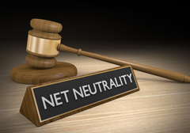

Long Live the Web really made me think about Net Nuetrality and the whole ordeal that went on last year around this time. Tim Berners-Lee really emphasized the openness and the freedom of the earlier days of the internet. If I wanted to created a website and put it up I could have just made an HTML page, name the site, and then upload it using HTTP. I do not know if our ISP's are actually slowing anything down just because I don't pay a premium, but if they do then what right do they have to do that. Originally the Web was open and free, not something we had to pay. There needs to be a separation between the internet and the web.
Another interesting thing was that he mentioned Apple's Itunes and how it was a walled off, closed. It is limited to the one company's vision and thoughts. Unlike the Web which everyone can access and update. Not being limited makes the Web diverse and every changing.
It was kind of creepy how this guy thought of something that was similar to the Web before it was even made. Just made me think of how we can conceive of inventions even before they are made. We have the potentials to invent new applications, products, and things even though sometimes we might think like things are already made.